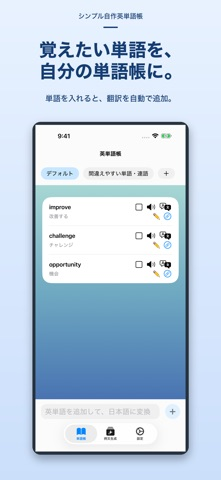

単語・連語を追加する
覚えたい言葉を入力して、目的に合うリストへ保存します。
調べた英単語を、次に使える言葉へ。
シンプル自作英単語帳は、自分で英単語や連語を登録し、翻訳・発音・例文を確認できるiPhoneアプリです。目的ごとのリストとチェック機能で復習を続けられます。
App Storeで見るiPhone / iOS 16.0以降 · 価格・対応端末はApp Storeをご確認ください

HOW TO USE
覚えたい言葉を入力して、目的に合うリストへ保存します。
翻訳や発音を確認し、必要に応じて訳を編集。例文も学習に使えます。
チェック機能で学習状況を整理。単語を長押しすると、別のリストへ1件ずつ移動できます。
FEATURES
仕事用、読書用、間違えやすい言葉など、自分の目的に合わせて整理できます。
自動翻訳を確認し、文脈に合う意味に直して残せます。
1.14からは設定画面で母国語・翻訳先を選択でき、単語の翻訳と例文の訳に反映されます。
FAQ
自分で英単語や連語を登録して使うアプリです。覚えたい言葉を目的ごとのリストにまとめられます。
はい。訳は編集できます。単語が使われた文脈を確認しながら、覚えたい意味に整えてください。
配信中の1.14では、単語を長押しして1件ずつ別のリストへ移動できます。
データの取り扱いはプライバシーポリシーをご確認ください。
1.14では母国語・翻訳先の設定、初回チュートリアル、単語のリスト間移動、例文と翻訳の表示を改善しました。
2026年10月18日確認：バージョン 1.14。最新の配信状況はApp Storeをご確認ください。